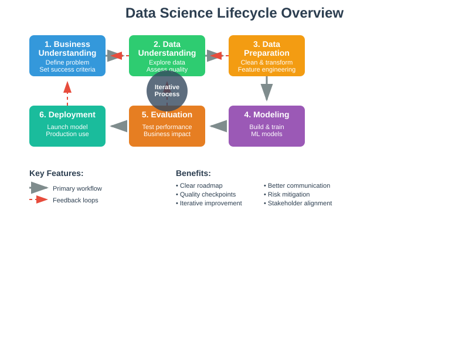
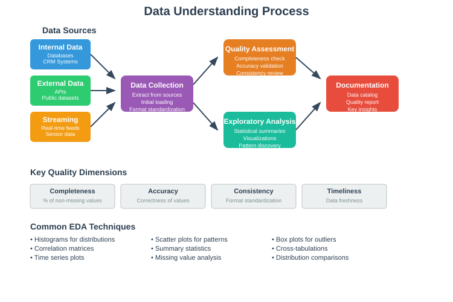
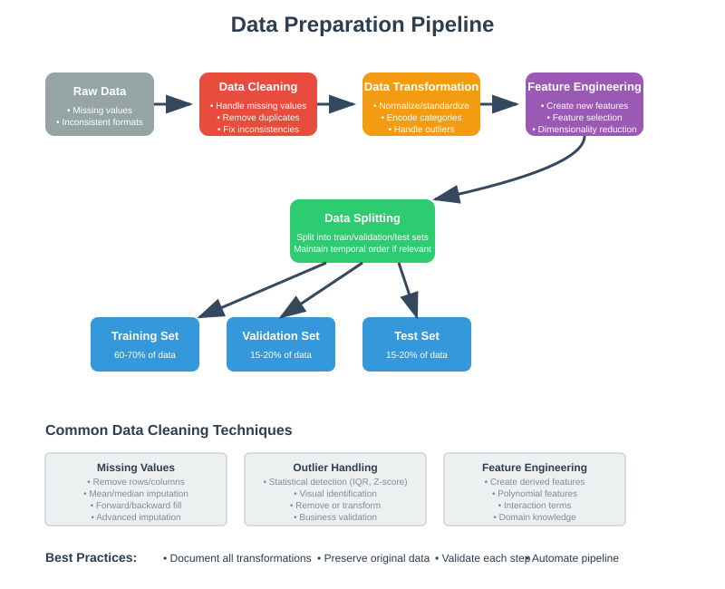
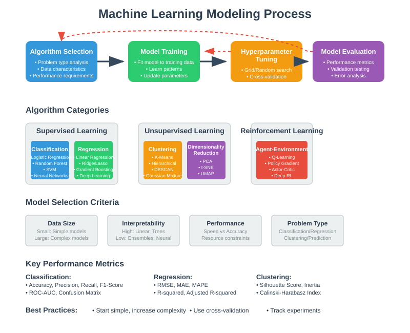
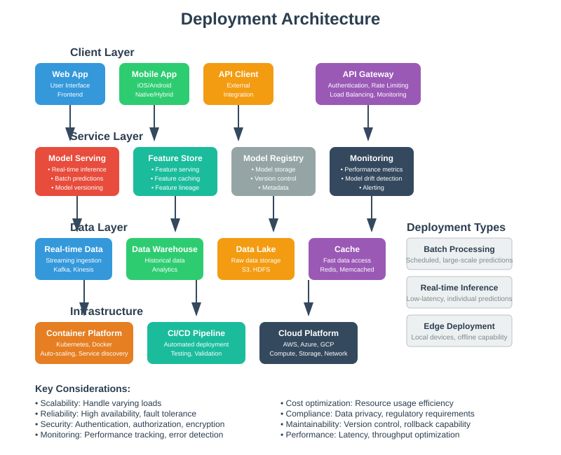

Data Science Lifecycle: A Comprehensive Guide
🔍 Quick Navigation
- Overview
- Phase 1: Business Understanding
- Phase 2: Data Understanding
- Phase 3: Data Preparation
- Phase 4: Modeling
- Phase 5: Evaluation
- Phase 6: Deployment
- Methodology Comparison
- Best Practices
- References & Further Reading
📊 Overview
The Data Science Lifecycle is a structured roadmap for managing data science projects from start to finish. Think of it as a GPS for your data journey - it helps you navigate from business problem to deployed solution without getting lost along the way.

This lifecycle consists of six main phases that work together like pieces of a puzzle. The beauty is that it's not a straight line - you can loop back to earlier phases when you discover new insights or need to refine your approach.
Why Use a Structured Approach?
- Clarity: Everyone knows what comes next
- Quality: Nothing important gets skipped
- Efficiency: Less time wasted on rework
- Communication: Easier to explain progress to stakeholders
🎯 Phase 1: Business Understanding
Before diving into data, you need to understand what problem you're solving and why it matters. This is like planning a trip - you need to know your destination before choosing the route.
What You'll Do
Define the Problem - What specific business challenge are we addressing? - How will we measure success? - What would "good enough" look like?
Meet the Stakeholders - Who cares about this project? - What are their expectations? - How will they use the results?
Set Boundaries - What resources do we have? - What's our timeline? - What's out of scope?
Key Questions to Answer
- Why is this project important right now?
- What happens if we do nothing?
- How will we know if we've succeeded?
- Who will be impacted by the results?
Common Deliverables
- Project charter (one-page summary)
- Success criteria checklist
- Stakeholder contact list
- Timeline and milestones
📈 Phase 2: Data Understanding
Now it's time to get acquainted with your data. Think of this as meeting your data for the first time - you want to understand its personality, quirks, and potential.

Data Discovery
Find Your Data Sources - Internal databases and systems - External data providers - Public datasets - Real-time data feeds
Check Data Quality - Is the data complete? - Is it accurate and reliable? - How fresh is it? - Are there obvious errors?
Exploratory Data Analysis (EDA)
This is like being a detective - you're looking for clues and patterns in your data.
Basic Questions to Explore - What does a typical record look like? - Are there missing values? How many? - What are the data types and formats? - Are there outliers or unusual patterns?
Visual Exploration - Create histograms for numerical data - Make bar charts for categories - Plot trends over time - Look for correlations between variables
Data Quality Assessment
| Quality Dimension | What to Check | Red Flags |
|---|---|---|
| Completeness | Missing values | >20% missing in key fields |
| Accuracy | Obvious errors | Impossible values (age = 200) |
| Consistency | Format variations | Mixed date formats |
| Timeliness | Data freshness | Old data for real-time needs |
🔧 Phase 3: Data Preparation
This is often the longest phase - like preparing ingredients before cooking. Good preparation makes everything else easier and better.

Data Cleaning
Handle Missing Values - Remove records with too many missing values - Fill in missing numbers with averages or medians - Use "Unknown" for missing categories - Sometimes missing values are meaningful!
Fix Inconsistencies - Standardize formats (dates, phone numbers, addresses) - Correct obvious typos - Merge duplicate records - Resolve conflicting information
Deal with Outliers - Identify unusual values - Investigate if they're errors or genuine - Decide to keep, remove, or adjust them
Feature Engineering
Creating new, useful variables from existing data:
Common Transformations - Calculate age from birth date - Extract day of week from date - Combine first and last name - Create ratios (e.g., debt-to-income)
Domain-Specific Features - Customer lifetime value for retail - Risk scores for finance - Engagement metrics for social media - Performance indicators for manufacturing
Data Splitting
Divide your data into different buckets:
- Training Data (60-70%): Teach the model
- Validation Data (15-20%): Tune the model
- Test Data (15-20%): Final evaluation
Think of it like studying for an exam - you practice with homework (training), check progress with quizzes (validation), and prove knowledge on the final exam (test).
🤖 Phase 4: Modeling
This is where the magic happens - you build models that can make predictions or find patterns in your data.

Choose Your Algorithm
For Prediction Problems (Supervised Learning) - Linear Regression: Simple relationships, easy to explain - Random Forest: Good all-around performer, handles mixed data types - Gradient Boosting: Often wins competitions, great accuracy - Neural Networks: Complex patterns, needs lots of data
For Pattern Finding (Unsupervised Learning) - K-Means Clustering: Group similar items together - Association Rules: Find items that go together - Principal Component Analysis: Reduce complexity while keeping information
Model Development Process
Start Simple - Begin with basic models - Understand what works and what doesn't - Gradually increase complexity
Experiment and Compare - Try different algorithms - Test various settings - Keep track of what performs best
Tune for Better Performance - Adjust model parameters - Use cross-validation to avoid overfitting - Balance accuracy with simplicity
Key Performance Metrics
For Classification (Yes/No Predictions) - Accuracy: How often is the model right? - Precision: Of positive predictions, how many are correct? - Recall: Of actual positives, how many did we catch?
For Regression (Numerical Predictions) - Mean Absolute Error: Average prediction error - Root Mean Square Error: Penalizes large errors more - R-squared: Percentage of variation explained
✅ Phase 5: Evaluation
Before deploying your model, you need to thoroughly test it - like test driving a car before buying it.
Comprehensive Testing
Technical Performance - Does it meet accuracy requirements? - Is it fast enough for real-world use? - Can it handle the expected data volume? - Is it stable and reliable?
Business Impact - Will it actually solve the business problem? - What's the expected return on investment? - Are stakeholders satisfied with the results? - What are the risks if it fails?
Real-World Validation
A/B Testing - Test the model with a small group first - Compare results to current approach - Measure actual business impact - Scale up if results are positive
Bias and Fairness Checks - Does the model treat different groups fairly? - Are there unintended discriminatory effects? - Is it compliant with regulations? - Are the results explainable?
Decision Points
Before moving to deployment, answer: - Is the model good enough to be useful? - Are the benefits worth the costs and risks? - Do we have stakeholder buy-in? - Is the technical infrastructure ready?
🚀 Phase 6: Deployment
The final phase - bringing your model to life in the real world where it can start creating value.

Deployment Options
Batch Processing - Run the model on schedule (daily, weekly) - Process large amounts of data at once - Good for reports and periodic updates
Real-Time Predictions - Make predictions instantly when requested - Integrate with websites or apps - Respond within milliseconds
Edge Deployment - Run the model on local devices - Work without internet connection - Useful for mobile apps or IoT devices
Production Considerations
Infrastructure Setup - Cloud servers or on-premises hardware - Backup systems and failover plans - Security and access controls - Monitoring and alerting systems
Integration Challenges - Connect with existing systems - Handle different data formats - Ensure consistent performance - Maintain data security and privacy
Ongoing Maintenance
Monitor Performance - Track prediction accuracy over time - Watch for system errors or slowdowns - Monitor business impact metrics - Set up automated alerts
Keep the Model Fresh - Retrain with new data regularly - Update when business rules change - Version control for easy rollbacks - Test updates before deployment
🔄 Methodology Comparison
Different teams prefer different approaches to managing data science projects.
| Methodology | Best For | Key Features | When to Use |
|---|---|---|---|
| CRISP-DM | Business projects | 6-phase structure, business focus | Most common choice |
| KDD | Research projects | Academic rigor, knowledge discovery | University or R&D settings |
| TDSP | Enterprise teams | Microsoft tools, collaboration focus | Large organizations |
| Agile Data Science | Fast-moving projects | Iterative sprints, rapid feedback | Startups or rapid prototyping |
How to Choose
Consider these factors: - Team size: Small teams may prefer simpler approaches - Timeline: Tight deadlines favor agile methods - Industry: Regulated industries need more documentation - Experience: New teams benefit from structured approaches
💡 Best Practices
Universal Tips for Success
Start with the End in Mind - Always keep business goals front and center - Define success criteria early - Plan for deployment from day one
Embrace Iteration - Expect to loop back to earlier phases - Build in time for refinement - Learn from each iteration
Communicate Constantly - Keep stakeholders informed of progress - Explain technical concepts in business terms - Document decisions and rationale
Quality Over Speed - Take time to understand the data properly - Validate results thoroughly - Don't skip the evaluation phase
Common Pitfalls to Avoid
- Jumping straight to modeling without understanding the business
- Using poor quality data and hoping the model will fix it
- Building complex models when simple ones work just as well
- Forgetting about deployment until the last minute
- Not planning for ongoing maintenance
📚 References & Further Reading
Books
- "Doing Data Science" by Cathy O'Neil & Rachel Schutt - Practical introduction to data science workflow
- "The Data Science Handbook" by Field Cady - Comprehensive guide covering the entire lifecycle
Online Resources
- CRISP-DM Official Guide - crisp-dm.org - Original methodology documentation
- Microsoft Team Data Science Process - docs.microsoft.com/tdsp - Enterprise-focused approach
- Kaggle Learn - kaggle.com/learn - Free courses on data science techniques
Research Papers
- "Cross-Industry Standard Process for Data Mining" (CRISP-DM 1.0) - Foundational methodology paper
- "From Data Mining to Knowledge Discovery in Databases" by Fayyad et al. - KDD process definition
Tools & Platforms
- Jupyter Notebooks - Interactive development environment
- Apache Airflow - Workflow orchestration and scheduling
- MLflow - Machine learning lifecycle management
- DVC (Data Version Control) - Version control for data science projects